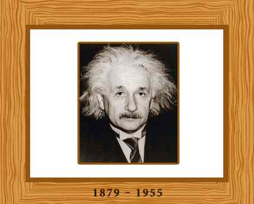

Albert Einstein was born in Germany. He was a great physicist from America and a Nobel laureate. Einstein gained worldwide fame as he created extraordinary theories related to relativity and for his suggestions and premises that are related to the light’s particle nature. Einstein is one of the most renowned physicists of the twentieth century.
Einstein was born on 14th March, 1879 in Ulm, Germany. He spent his teenage years in Munich with his family. He and his family had an electronic equipment store. Einstein was not talkative in his childhood, and till the age of three, he didn’t talk much. But as a teenager, he had great interest in nature and had aptitude to comprehend tricky and complicated theories of arithmetic. Einstein knew geometry when he was 12 years old.
Einstein loved to be creative and innovative, therefore he loathed the boring and noncreative spirit in his school at Munich. Einstein left his school at the age of 15, as his family left Germany due to constant failure in their business. His family went to Milan and Einstein spent a year with them. It was then that he decided that, in order to survive, he has to create his own way out. He studied his secondary school from Switzerland and then joined Swiss National Polytechnic which was located in Zurich. Einstein didn’t like the teaching method there, so he bunked classes to study physics or play his violin. With the help of his classmate’s notes, he cleared his exams, and in 1900, he graduated. Einstein was not considered a good student by his teachers.
Einstein accepted the job of a professor and worked as an alternate teacher for about two years. He achieved the post of an examiner in the year 1902 in Bern at the office of Swiss patent. Einstein wedded his class mate Mileva Maric in 1903. He had two sons with her but they later divorced. After some years Einstein married someone else.
University of Zurich awarded Einstein doctorate in 1905 for his thesis on the different sizes and extent of molecules. In order to highlight the importance of physics, Einstein published three theoretical documents which stated the significance of physics in twentieth century. One of these papers was based on Brownian motion which discussed Einstein’s prediction related to the movement of particles that are present in any liquid. Later many experiments supported his predictions.
Einstein’s second publication discussed photoelectric effect. This paper comprised of innovative premises related to the light’s nature. Einstein gave the idea that light under some conditions contains some particles and the energy that a light particle contains is termed as photon. This photon and the radiation’s frequency are directly related. Its formula is E=hu where E is defined as the radiation’s energy and h is a constant defined as Planck’s constant and u is defined as radiation’s frequency. Einstein’s idea was rejected by everyone because it was against the conventional idea which stated that transfer of light energy is an ongoing process.
Robert Andrews, who was an American physicist, was surprised when Einstein’s theory was experimentally proven by him a decade later. Main focus of Einstein was to comprehend the nature of radiations that are electromagnetic. This led to the birth of a theory that will be a mix of light’s particle and wave nature. This theory too was comprehended by few scientists.
In 1905, Einstein’s third paper was published. It was based on dynamics of bodies in motion which later was called as the theory of relativity. The nature of radiation and matter and their interaction was the theme of discussion since the era of Newton. The view that laws of mechanics are essential is defined as the mechanical view of world, and the view that laws of electric are essential is defined as electromagnetic view of world. None of the view has been successful in giving a reliable elucidation for the interaction between matter and radiation, that is, the relation between radiation and matter is seen concurrently by the viewer at rest and a viewer travelling at consistent speed.
After observing these problems for a decade, Einstein came to the conclusion that the main problem was in the theory of measurement, and not in the theory related to matter. The main crux of Einstein’s special theory of relativity was the comprehension of the fact that all the dimensions of space and time are dependent on judgments that whether two events those are far off occur together. This hypothesis led Einstein towards the development of a theory which was based on two basic hypotheses: one that laws of physics are identical in all inertial positions. This is called as the principle of relativity. Second postulate is called as the principle of variance, according to this principle; the light’s speed is worldwide stable in a vacuum. Hence, Einstein was capable of providing reliable and accurate explanation of physical actions and measures in varying inertial positions without assuming about the matter or radiation’s nature, or their interaction. Practically, Einstein’s argument was not understood by any one.
Einstein’s work was not appreciated by others, not because it was very tough or difficult to understand, but the main problem that people faced was from Einstein’s viewpoint towards the theories and the affiliation between theory and experiment. Although Einstein believed that the sole foundation of information is experience and practice, he also maintained that scientific theories are developed by physical instinct, and the grounds on which theories are laid cannot be linked to an experiment rationally. According to Einstein, the definition of a good theory is the one that needs least number of postulates for physical confirmation. The innovation in Einstein’s postulates made it difficult for all his colleagues to understand his work.
Not many people supported Einstein. His biggest supporter was Max Planck who was a physicist from Germany. Einstein stayed at the patent agency for 4 years till the time he became famous in the physics society. He rapidly progressed upward in the educational German speaking world. In 1909, Einstein had his first meeting at the Zurich University. He then moved to the University of Prague dominated by German speaking people. He then came back to the Swiss Polytechnic in Zurich in 1912. Eventually Einstein was selected at the Kaiser Wilhelm Institute for Physics in Berlin as the director.
In 1907 before Einstein left his job at patent office, he started working on the theory of relativity. He started by defining the equivalence principle which states that the accelerations of the frame of reference is equal to gravitational fields. For instance people while travelling in a lift are unable to make a decision that the force that they feel is felt by the elevator’s invariable acceleration or by the gravitation of the elevator. Until the year 1916, relativity theory was not available. According the general theory of relativity, the connection bodies had been attributed to the forces of gravity, are elaborated as the power of bodies on the space and time dimensions.
On the grounds on general theory of relativity, Einstein gave reasons for the changes in the orbital movement of planets that were not elaborated previously. He also told about the movement of starlight in the surroundings of a huge body like sun. Einstein became famous in 1919, when this prediction of Einstein was confirmed throughout the eclipse of the sun.
For the remaining lifetime of Einstein, he spent most of time to focus on his theory more. The last attempt of Einstein which was the theory related to the unified field was not completely successful, was an effort to comprehend the physical connections that included all weak, strong and electromagnetic interactions. This was all an adjustment of the geometry of space and time.
It was felt by most of Einstein’s classmates that these attempts were wrong. During 1915 and 1930 a new concept was in progress in the field of physics related to the basic trait of matter, also known as the quantum theory. According to this theory light has a dual character; it has the characteristics of both particle and wave, which Einstein previously considered compulsory. Also the uncertainty principle which says that accuracy in the process of measurement is restricted. In addition to this, it consisted of a new denial, at the basic level, of the idea of exact measurement. However, Einstein was not in favor of such ideas and he remained an opponent of these notions till his death.
Einstein became famous worldwide after 1919. He got many awards and prizes. In 1921, different scientific societies throughout the world awarded Einstein the Nobel Prize in physics. Wherever he travelled globally, that became an event. He was always followed by media. Einstein used media to add his views on society and politics.
Einstein supported pacifism and Zionism movement. While the World War I was taking place Einstein was one of the academics of Germany that criticized Germany’s participation in the war openly. He was attacked many times by Germans because of his continuous support toward Zionists and pacifist’s goals. Einstein’s theories including the relativity theory was criticized publically.
Einstein left Germany and went to United States when Hitler gained power. He got a place in New Jersey at the Institute of Advanced Study at Princeton. On behalf of Zionism world Einstein continued his efforts. Einstein had to abandon pacifist because of the danger face by mankind put forward by the Nazi rule in Germany.
Einstein worked together with many other scientists in 1939 and wrote a letter to President Franklin D. Roosevelt, giving the option of making an atomic bomb and the possibility that the government of Germany was planning such route. As the letter was signed only by Einstein, helped in building the atomic bomb although Einstein had no participation in the whole work process and he was unaware about it.
Einstein participated actively in the international disarmament cause after the war. Einstein maintained his support with Zionism but he rejected the offer to become the president of Israel. In late 1940’s in US Einstein emphasized on the importance of making sacrifices to safeguard the freedom of politics. Einstein left this world on 18th April, 1955 in Princeton.
Some of Einstein’s efforts have been considered impractical. Einstein’s proposals had been very well managed and nicely planned and just like his theories that seemed motivated by the intuition of sound which comprised of wise and cautious observational assessment. Einstein was interested in politics and social issues too but it was science that really caught his interest and he believed that it was only the universe’s nature that mattered in the end. Relativity was found in his writings. He wrote, The Special and General Theory , About Zionism, Builders of the Universe, Why War?, The World as I See It, The Evolution of Physics and Out of My Later Years in the years 1916, 1931, 1932, 1933, 1934, 1938 and 1950 respectively. In the year 1987, Einstein’s papers had begun to get published in multiple volumes.
Go to top